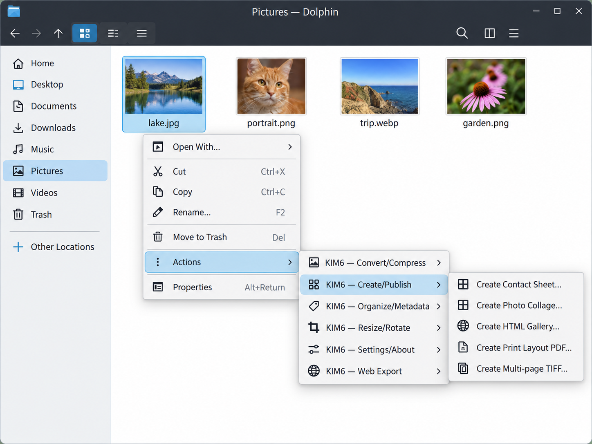
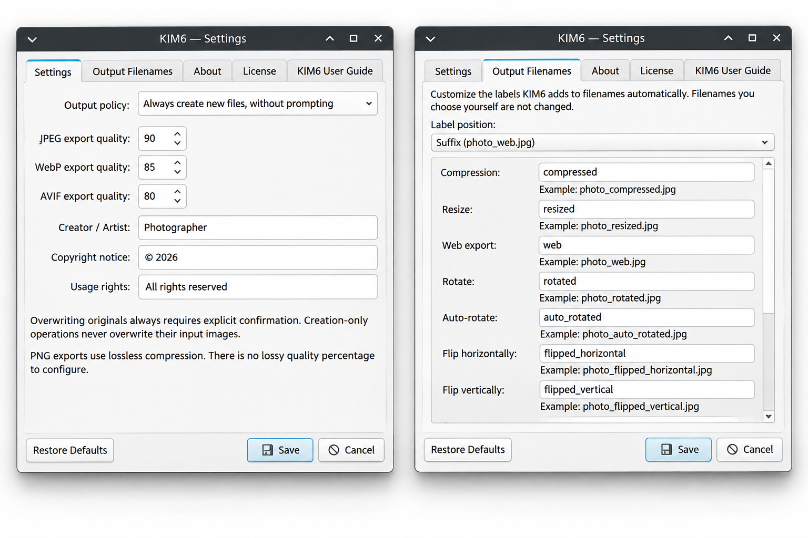
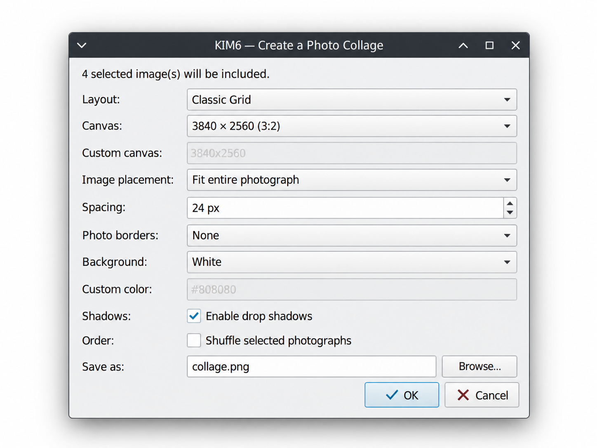
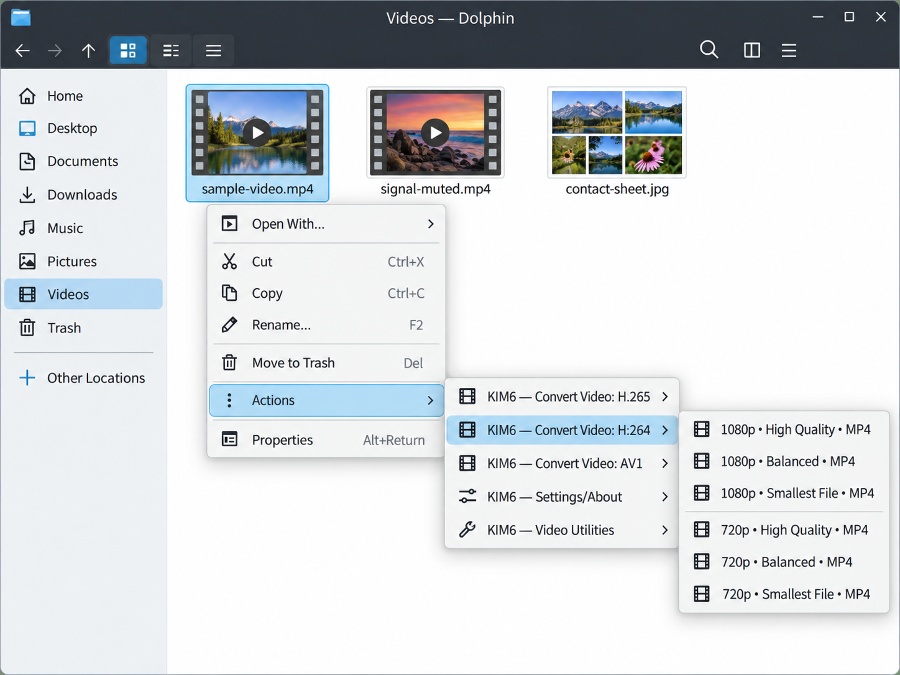
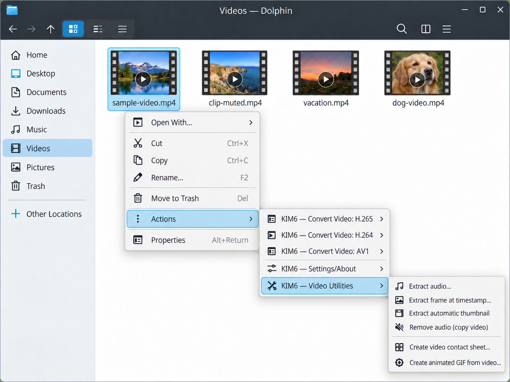
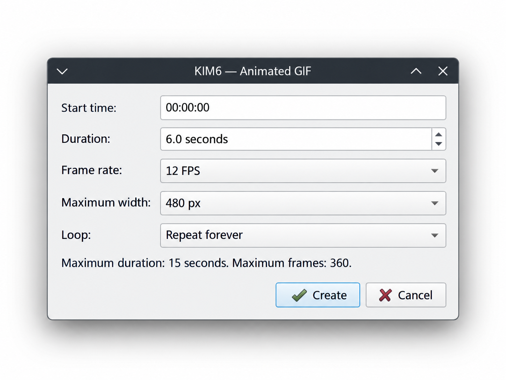

SIZE
Resize an image
Resize an image to fit within a chosen width and height while keeping its proportions. Use a preset size, enter your own dimensions, or resize by percentage.
lake.jpglake_resized.jpg
Resize, convert, prepare, and organize your images and videos without having to open a full editor. This guide shows you where to start and how to use KIM6 to improve your workflow.
01 FIRST STEPS
No new application to learn. KIM6 adds actions to the context menu you already use in Dolphin.
Choose one or more local photos or videos in Dolphin.
Open a KIM6 submenu and choose the task you want.
For actions that offer a choice, select Create new to keep the original file.
KIM6 is designed to protect your originals. When an action offers a choice, Create new files (originals untouched) is selected by default. Replacing an original requires choosing Overwrite and confirming a separate warning. How file handling works.
SEE HOW IT WORKS






02 EVERYDAY EDITS
These examples show common KIM6 actions and the filenames they produce using the default settings. Your originals remain untouched when Create new is selected.
Resize an image to fit within a chosen width and height while keeping its proportions. Use a preset size, enter your own dimensions, or resize by percentage.
Compress JPEG, PNG, WebP, or AVIF images using settings appropriate for each format. PNG compression is lossless, while other formats can trade some image detail for smaller files.
Convert images between formats such as JPEG, PNG, WebP, AVIF, TIFF, and more. KIM6 checks whether the necessary format support is available before creating the result.
Select several photos and apply the same action. Finished outputs remain available if a later item fails.
If an output filename already exists, KIM6 adds a number to avoid overwriting it. You can also choose whether descriptive labels appear before or after the filename. For example, compressed images can be named filename_compressed.jpg (the default) or compressed_filename.jpg, whichever fits your workflow. Naming and command options
04 INFORMATION INSIDE YOUR FILES
Photos can contain location, camera, author, and capture-date information. KIM6 gives you targeted ways to work with it.
Select Organize/Metadata › Strip GPS Metadata to remove recognized GPS coordinate fields while retaining unrelated metadata.
Select Organize/Metadata › Strip AI Metadata to remove recognized AI-generation information while keeping unrelated metadata.
If there is no matching GPS metadata, KIM6 reports the file unchanged and creates no copy.
Add creator and copyright information, shift recorded camera times, or synchronize embedded timestamps and filesystem modification times in either direction.
Time shifting is a fixed adjustment, not a timezone conversion. EXIF timestamps and filesystem modification times are different things.
Privacy note: KIM6 removes recognized GPS coordinates and AI-generation metadata, but some information may remain. These tools cannot guarantee complete removal of location or AI-related information.
05 MAKE SOMETHING NEW
Turn your photos into galleries, collages, albums, animations, or slideshows. KIM6 saves the results separately, leaving your original images untouched.
Collages include grid, mosaic, hero, filmstrip and scattered layouts with operation-specific canvas, spacing, background, frame and shadow controls. Galleries include Dark Portfolio; printable PDF contact sheets complement albums and print layouts. Slideshows are silent and straightforward: fixed time per photo, without titles, transitions, pan, or zoom effects.
06 VIDEO WORKFLOWS
Re-encode video, extract useful parts, or generate previews using the codecs available on your system.
Create a video using H.264, H.265, or an available AV1 encoder. Container and codec compatibility are checked.
Save a frame or generate a grid of representative images from a video.
Extract supported audio formats or remove audio while copying the compatible video stream.
Turn a short video segment into an animated GIF.
Encoder and container availability depend on FFmpeg and the libraries installed on your computer. Read the format compatibility notes
07 BEFORE YOU CLICK
KIM6 protects your original files by default. When an action could replace an original, you must explicitly approve the change. Nothing is silently overwritten.
KIM6 creates a separate file and leaves your original unchanged. When you are asked to choose, this is the default selection.
Replacing an original requires deliberately choosing Overwrite and approving a separate confirmation warning. You can cancel without changing the file.
Rotate or flip images as separate copies, or choose to replace the originals after explicit confirmation. Automatic EXIF rotation has the same protection.
Choose your defaults in Settings. In Dolphin, right-click a supported image or video and open Actions → KIM6 — Settings/About → Settings. Choose whether supported operations should create separate files automatically or ask how to proceed. Save your preferences to use them for subsequent operations.
Actions that create separate files. Web export, email preparation, galleries, albums, slideshows, and video frame, audio, and GIF tools leave your originals untouched. Video transcoding can also replace an original, but only after explicit confirmation.
Existing filenames and processing failures. KIM6 avoids silently overwriting existing results. Where supported, it adds a number to resolve filename conflicts. It checks generated output before publishing it, and successfully completed results remain available if a later item in the batch fails. See file-handling and configuration details.
08 WHEN SOMETHING GOES WRONG
If a menu is missing or an action fails, these common checks can help you identify and resolve the problem.
Restart Dolphin and verify the service menus were installed to a directory that Dolphin recognizes. A KDE Frameworks/KIO 6.29 regression affected submenu display; the fix is available in later Frameworks releases. Do not flatten KIM6 submenus as a workaround.
ImageMagick and FFmpeg support varies with the installed build and its delegates. KIM6 reports unavailable codecs rather than silently switching to a different output format. Animated APNG conversion needs FFmpeg; Resize and Web Export deliberately refuse animated APNG to avoid losing frames. Check the format reference for inspection commands.
Read the final error report, confirm the source is readable and the destination is writable, and check that the requested encoder is available. Successfully completed outputs remain in place. Test uncertain inputs using copies.
Many Create new actions save a derivative beside the input and add a number when the requested filename is occupied. Other actions prompt for a destination, use a configured output folder, or place email attachments in a persistent directory. Read the action's result dialog for the exact location.
09 GO DEEPER
This page covers everyday use. For additional information about features, settings, installation, or development, please check the resources below.